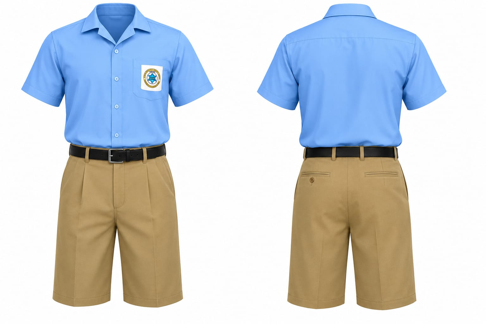
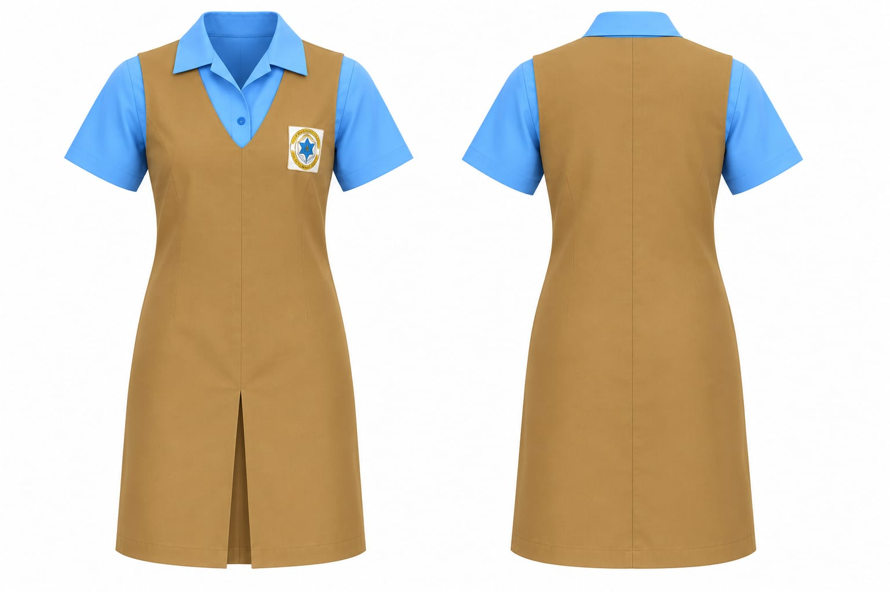
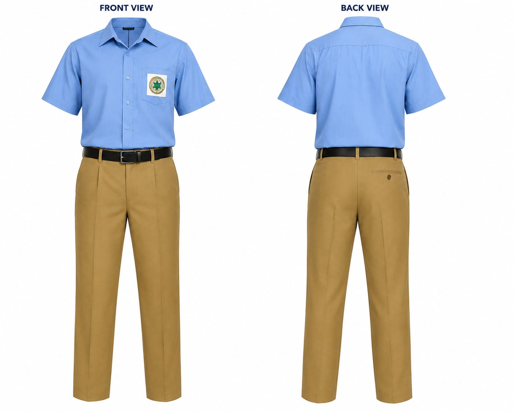
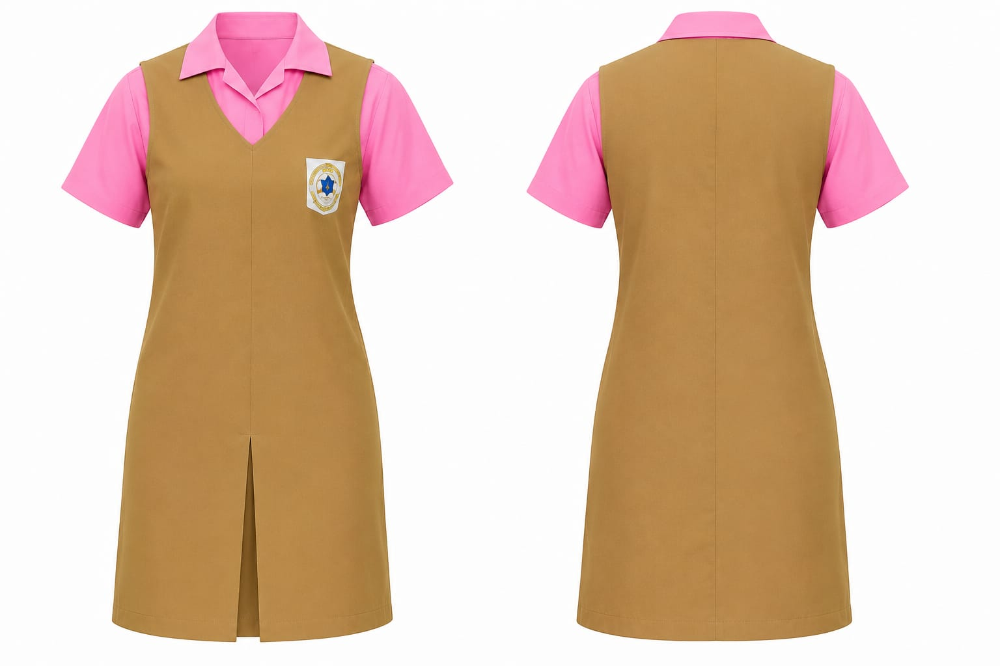
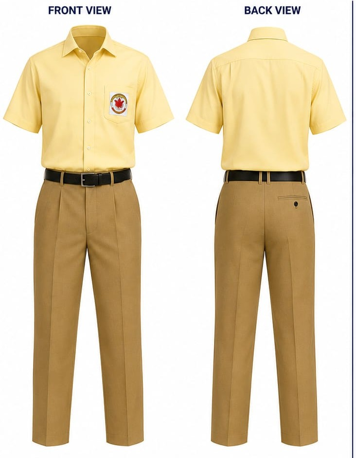
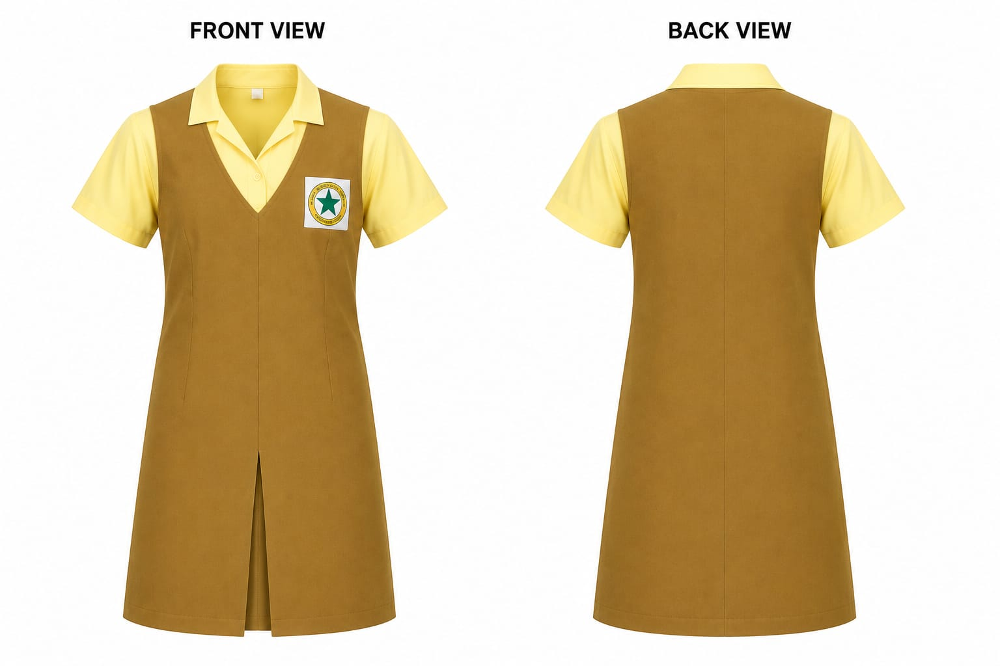
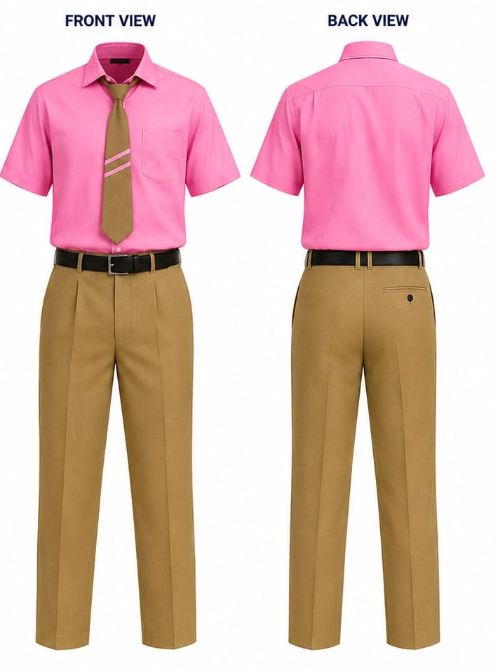
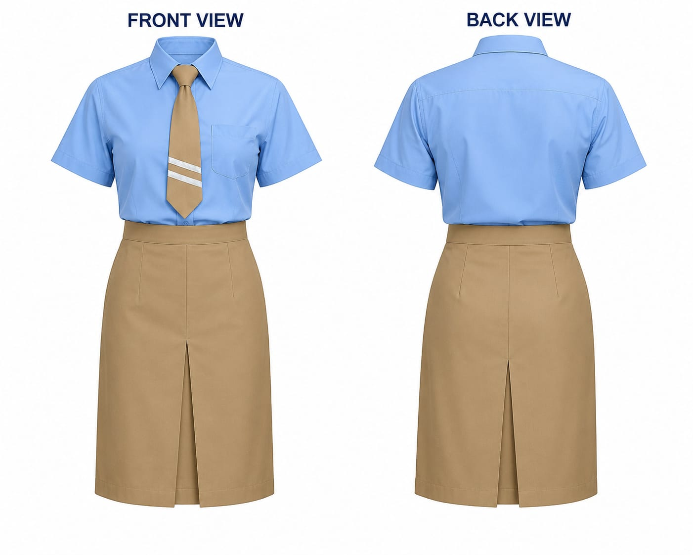
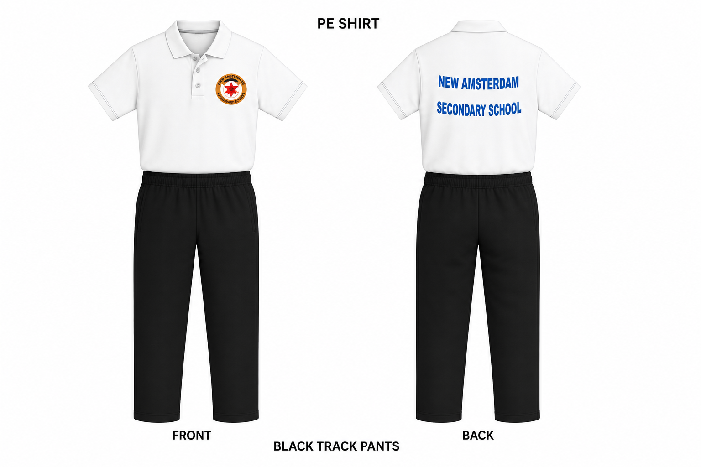

Grades 7–9 Boys
The prescribed uniform for male students in Grades 7 to 9 consists of a light blue shirt and khaki short pants. This uniform must be worn with the approved footwear at all times.
View larger image →Leadership, service, discipline, co-curriculars, extra-curriculars, and academic excellence are important parts of the NASS experience.
The New Amsterdam Secondary School uniform represents pride, discipline and unity. Students are expected to wear the prescribed uniform neatly and correctly at all times.

The prescribed uniform for male students in Grades 7 to 9 consists of a light blue shirt and khaki short pants. This uniform must be worn with the approved footwear at all times.
View larger image →
The prescribed uniform for female students in Grades 7 to 9 consists of a light blue shirt and khaki v-neck kimono featuring an inverted pleat at the centre front. This uniform must be worn with the approved footwear at all times.
View larger image →
The prescribed uniform for male students in Grade 10 consists of a light blue shirt and khaki long pants. Size of pants bottom:14. This uniform must be worn with the approved footwear at all times.
View larger image →
The prescribed uniform for female students in Grade 10 consists of a pink shirt and khaki v-neck kimono featuring an inverted pleat at the centre front. This uniform must be worn with the approved footwear at all times.
View larger image →
The prescribed uniform for male students in Grade 11 consists of a light yellow shirt and khaki long pants. Size of pants bottom:14. This uniform must be worn with the approved footwear at all times.
View larger image →
The prescribed uniform for female students in Grade 11 consists of a light yellow shirt and khaki v-neck kimono featuring an inverted pleat at the centre front. This uniform must be worn with the approved footwear at all times.
View larger image →
The prescribed uniform for male students in sixth form consists of a pink/blue/yellow shirt and khaki long pants. Size of pants bottom:14. This uniform must be worn with the approved footwear at all times. Year One students wear a khaki tie with one stripe, while Year Two students wear a khaki tie with two stripes. The colour of the stripe matches the colour of the shirt.
View larger image →
The prescribed uniform for female students in sixth form consists of a pink/blue/yellow shirt and khaki skirt featuring an inverted pleat at the centre front. This uniform must be worn with the approved footwear at all times. Year One students wear a khaki tie with one stripe, while Year Two students wear a khaki tie with two stripes. The colour of the stripe matches the colour of the shirt.
View larger image →Official Physical Education attire for all students.

Students are required to wear the official Physical Education uniform which consist of the Polo shirt and black track pants during PE lessons, sporting activities and other approved school events. The uniform should always be clean, neat and worn with the appropriate footwear.
View larger image →Students grow beyond the classroom through leadership, service, sport and co-curricular participation.
Student representatives develop leadership, communication and service through elected participation.
Eagle, Macaw, Spurwing, Toucan and Pheasant Houses promote teamwork, participation and friendly competition.
Cadet activities support discipline, teamwork, leadership and civic responsibility.
Students participate in a wide variety of sporting activities that build fitness and school pride.
Co-curricular groups provide opportunities for creativity, culture, service and personal growth.
Respect, responsibility, cooperation, integrity and excellence guide conduct across the school community.
New Amsterdam Secondary School proudly represented Guyana at the prestigious Sir Garfield Sobers International Schools Cricket Tournament in Barbados.
The school’s cricket team travelled to Barbados to participate in the Sir Garfield Sobers International Schools Cricket Tournament, competing alongside school teams from across the Caribbean and other participating countries.
The tournament provided our student-athletes with valuable international competition, cultural exposure and the opportunity to develop teamwork, discipline, confidence and sportsmanship.
During the tournament, members of the team also had the honour of meeting and taking a photograph with the late West Indies cricket legend, Sir Garfield Sobers, at the historic Kensington Oval in Barbados.